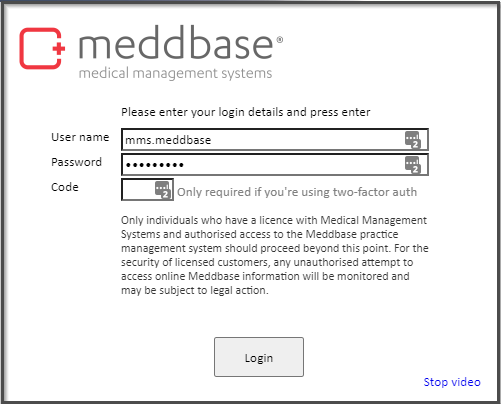
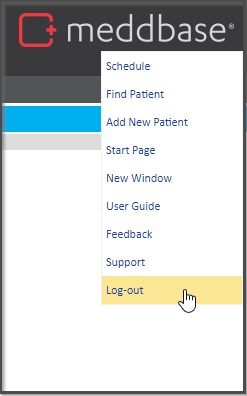

The purpose of this article is to define the process of logging in and out of Meddbase.
To log in to Meddbase follow the following steps:

In order to log in, you will need a user profile, demographic record and a license. If you do not have all 3 requirements, you will not be able to log in and will need to contact your system administrator to provide access.
To Log out of Meddbase follow the following steps:

If you are unable to log in, please contact your system administrator and request a password reset.